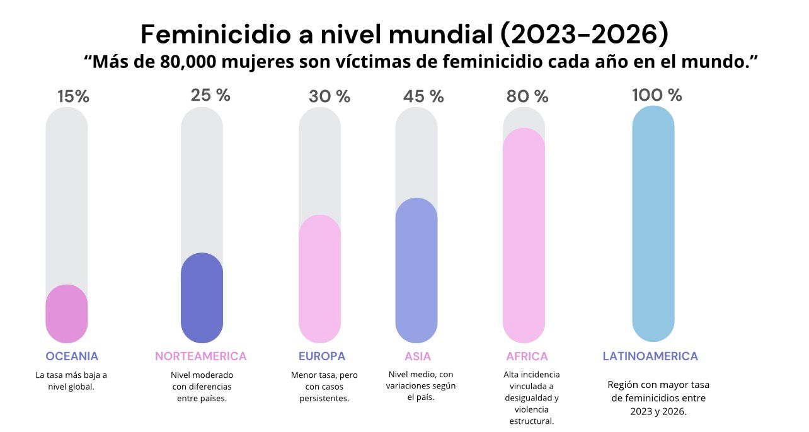

REPÚBLICA DOMINICANA
En República Dominicana, el feminicidio sigue siendo una problemática relevante, con casos recientes que reflejan la necesidad de fortalecer políticas públicas, educación y protección social. El feminicidio representa una de las manifestaciones más graves de la violencia de género y constituye un problema social que afecta profundamente a la población. Este fenómeno está estrechamente relacionado con la violencia intrafamiliar, ya que una gran parte de los casos ocurre dentro de relaciones de pareja o expareja donde existían antecedentes de abuso.
El Estado dominicano ha reconocido la gravedad de esta problemática e implementado diversas políticas como las casas de acogida para mujeres en riesgo. Instituciones como el Ministerio de la Mujer y la Procuraduría trabajan en la prevención y sanción, mientras que el sistema 911 juega un papel clave para una respuesta rápida en situaciones de peligro.

ESTADÍSTICAS
A nivel global y local, miles de mujeres son víctimas cada año. En RD, las cifras evidencian la magnitud del problema y la urgencia de acciones concretas para erradicar esta violencia sistemática.
PREVENCIÓN
Educación en igualdad, leyes más estrictas, apoyo a víctimas y conciencia social son los pilares para erradicar este crimen. La sociedad debe rechazar cualquier forma de violencia de género.
LLAMADO A LA ACCIÓN
"Justicia para las que ya no están y para las que aún siguen siendo víctimas."